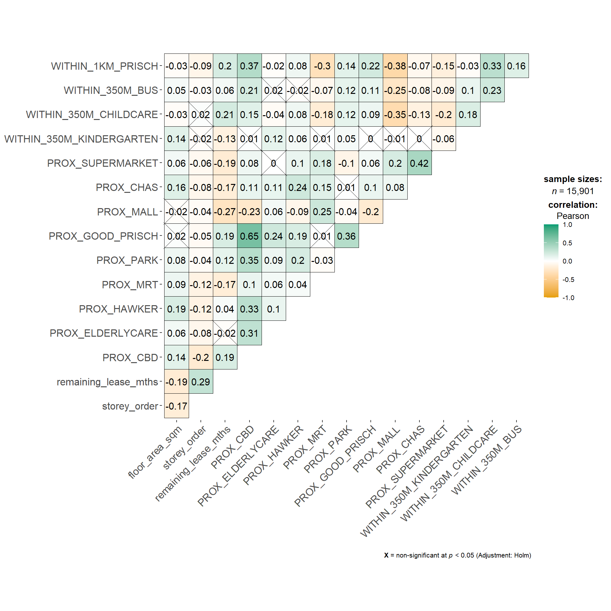

pacman::p_load(df, spdep, GWmodel, SpatialML, tmap, rsample, yardstick, tidyverse, knitr, kableExtra, spatitalRF, ggstatsplot, ranger)Week 13 Class
Predictive Modelling
Packages
mdata = readRDS("data/mdata.RDS")set.seed(1234)
HDB_sample <- mdata %>%
sample_n(1500)overlapping_points <- HDB_sample %>%
mutate(overlap = lengths(st_equals(., . )) > 1)
summary(overlapping_points$overlap) Mode FALSE TRUE
logical 1047 453 Spatial Jitter
HDB_sample <- HDB_sample %>%
st_jitter(amount = 5) #no. meters of jittersampling and splitting for models
resale_split <- initial_split(HDB_sample,
prop = 6.67/10,)
train_data <- training(resale_split)
test_data <- testing(resale_split)
# Its a good Habit to start saving your data as rds
# write_rds(train_data, "data/rds/train_data.rds")Multicolinerarity check
mdata_nogeo <- mdata %>%
st_drop_geometry()
ggcorrmat(mdata_nogeo[, 2:17])
gwr_bw_train_ad <- bw.gwr(resale_price ~ floor_area_sqm + storey_order +
remaining_lease_mths + PROX_CBD +
PROX_ELDERLYCARE + PROX_HAWKER +
PROX_GOOD_PRISCH + PROX_MALL + PROX_CHAS +
PROX_SUPERMARKET + WITHIN_350M_KINDERGARTEN +
WITHIN_350M_CHILDCARE +
WITHIN_1KM_PRISCH,
data=train_data,
approach="CV",
kernel="gaussian",
adaptive=TRUE,
longlat=FALSE)Adaptive bandwidth: 625 CV score: 3.66363e+12
Adaptive bandwidth: 394 CV score: 3.412143e+12
Adaptive bandwidth: 250 CV score: 3.052116e+12
Adaptive bandwidth: 162 CV score: 2.711192e+12
Adaptive bandwidth: 107 CV score: 2.356134e+12
Adaptive bandwidth: 73 CV score: 2.077005e+12
Adaptive bandwidth: 52 CV score: 1.883242e+12
Adaptive bandwidth: 39 CV score: 1.758101e+12
Adaptive bandwidth: 31 CV score: 1.641266e+12
Adaptive bandwidth: 26 CV score: 1.582404e+12
Adaptive bandwidth: 23 CV score: 1.529336e+12
Adaptive bandwidth: 21 CV score: 1.518322e+12
Adaptive bandwidth: 19 CV score: 1.498596e+12
Adaptive bandwidth: 19 CV score: 1.498596e+12 model calibration
gwr_ad <- gwr.basic(formula = resale_price ~ floor_area_sqm + storey_order +
remaining_lease_mths + PROX_CBD +
PROX_ELDERLYCARE + PROX_HAWKER +
PROX_GOOD_PRISCH + PROX_MALL + PROX_CHAS +
PROX_SUPERMARKET + WITHIN_350M_KINDERGARTEN +
WITHIN_350M_CHILDCARE +
WITHIN_1KM_PRISCH,
data=train_data,
bw=20,
kernel="gaussian",
adaptive=TRUE,
longlat=FALSE)Model output
gwr_ad ***********************************************************************
* Package GWmodel *
***********************************************************************
Program starts at: 2024-11-11 11:16:24.540765
Call:
gwr.basic(formula = resale_price ~ floor_area_sqm + storey_order +
remaining_lease_mths + PROX_CBD + PROX_ELDERLYCARE + PROX_HAWKER +
PROX_GOOD_PRISCH + PROX_MALL + PROX_CHAS + PROX_SUPERMARKET +
WITHIN_350M_KINDERGARTEN + WITHIN_350M_CHILDCARE + WITHIN_1KM_PRISCH,
data = train_data, bw = 20, kernel = "gaussian", adaptive = TRUE,
longlat = FALSE)
Dependent (y) variable: resale_price
Independent variables: floor_area_sqm storey_order remaining_lease_mths PROX_CBD PROX_ELDERLYCARE PROX_HAWKER PROX_GOOD_PRISCH PROX_MALL PROX_CHAS PROX_SUPERMARKET WITHIN_350M_KINDERGARTEN WITHIN_350M_CHILDCARE WITHIN_1KM_PRISCH
Number of data points: 1000
***********************************************************************
* Results of Global Regression *
***********************************************************************
Call:
lm(formula = formula, data = data)
Residuals:
Min 1Q Median 3Q Max
-167111 -41591 -4672 36140 228878
Coefficients:
Estimate Std. Error t value Pr(>|t|)
(Intercept) 56497.31 34575.16 1.634 0.102569
floor_area_sqm 2818.99 296.03 9.523 < 2e-16 ***
storey_order 14500.98 1099.16 13.193 < 2e-16 ***
remaining_lease_mths 365.26 15.08 24.226 < 2e-16 ***
PROX_CBD -18103.92 732.90 -24.702 < 2e-16 ***
PROX_ELDERLYCARE -9363.65 3257.53 -2.874 0.004134 **
PROX_HAWKER -20089.53 4199.51 -4.784 1.98e-06 ***
PROX_GOOD_PRISCH 2179.44 1054.46 2.067 0.039007 *
PROX_MALL -24227.31 6649.21 -3.644 0.000283 ***
PROX_CHAS -51436.75 20627.04 -2.494 0.012806 *
PROX_SUPERMARKET 6236.26 14172.61 0.440 0.660018
WITHIN_350M_KINDERGARTEN 10645.99 2107.99 5.050 5.25e-07 ***
WITHIN_350M_CHILDCARE -1462.40 1222.53 -1.196 0.231902
WITHIN_1KM_PRISCH -7714.11 1573.90 -4.901 1.11e-06 ***
---Significance stars
Signif. codes: 0 '***' 0.001 '**' 0.01 '*' 0.05 '.' 0.1 ' ' 1
Residual standard error: 62660 on 986 degrees of freedom
Multiple R-squared: 0.7257
Adjusted R-squared: 0.722
F-statistic: 200.6 on 13 and 986 DF, p-value: < 2.2e-16
***Extra Diagnostic information
Residual sum of squares: 3.870726e+12
Sigma(hat): 62277.46
AIC: 24944.58
AICc: 24945.07
BIC: 24121.82
***********************************************************************
* Results of Geographically Weighted Regression *
***********************************************************************
*********************Model calibration information*********************
Kernel function: gaussian
Adaptive bandwidth: 20 (number of nearest neighbours)
Regression points: the same locations as observations are used.
Distance metric: Euclidean distance metric is used.
****************Summary of GWR coefficient estimates:******************
Min. 1st Qu. Median 3rd Qu.
Intercept -9033947.33 -895892.73 -94322.75 184700.25
floor_area_sqm -3413.51 1140.08 1938.88 3412.56
storey_order 657.43 7744.81 11261.89 14104.58
remaining_lease_mths -341.47 311.09 420.22 539.64
PROX_CBD -675900.44 -35689.44 -12582.35 65815.57
PROX_ELDERLYCARE -394126.40 -20470.75 1860.83 23191.74
PROX_HAWKER -213597.41 -45774.50 -20815.23 1537.58
PROX_GOOD_PRISCH -853782.43 -80161.87 -18355.85 18738.25
PROX_MALL -163950.54 -54890.13 -11510.44 27950.74
PROX_CHAS -169243.07 -63532.66 -27577.03 21981.72
PROX_SUPERMARKET -383172.73 -45644.70 -3572.82 25733.89
WITHIN_350M_KINDERGARTEN -42287.25 -7490.15 1085.78 6369.54
WITHIN_350M_CHILDCARE -19973.71 -2558.21 1376.03 3869.32
WITHIN_1KM_PRISCH -59787.86 -3624.79 4135.55 9818.85
Max.
Intercept 7117465.78
floor_area_sqm 8748.48
storey_order 23612.26
remaining_lease_mths 772.56
PROX_CBD 922851.83
PROX_ELDERLYCARE 132157.08
PROX_HAWKER 169506.17
PROX_GOOD_PRISCH 547052.51
PROX_MALL 198009.83
PROX_CHAS 501181.10
PROX_SUPERMARKET 198325.79
WITHIN_350M_KINDERGARTEN 34091.48
WITHIN_350M_CHILDCARE 14751.40
WITHIN_1KM_PRISCH 22829.27
************************Diagnostic information*************************
Number of data points: 1000
Effective number of parameters (2trace(S) - trace(S'S)): 385.5473
Effective degrees of freedom (n-2trace(S) + trace(S'S)): 614.4527
AICc (GWR book, Fotheringham, et al. 2002, p. 61, eq 2.33): 24065.11
AIC (GWR book, Fotheringham, et al. 2002,GWR p. 96, eq. 4.22): 23458.75
BIC (GWR book, Fotheringham, et al. 2002,GWR p. 61, eq. 2.34): 24312.53
Residual sum of squares: 659562152643
R-square value: 0.953254
Adjusted R-square value: 0.9238747
***********************************************************************
Program stops at: 2024-11-11 11:16:25.252606 This is gonna take forever, but this is how you test your model. wait i think he was talking about something else….
gwr_pred <- gwr.predict(formula = resale_price ~ floor_area_sqm + storey_order +
remaining_lease_mths + PROX_CBD +
PROX_ELDERLYCARE + PROX_HAWKER +
PROX_GOOD_PRISCH + PROX_MALL + PROX_CHAS +
PROX_SUPERMARKET + WITHIN_350M_KINDERGARTEN +
WITHIN_350M_CHILDCARE +
WITHIN_1KM_PRISCH,
data=train_data,
predictdata = test_data,
bw=20,
kernel="gaussian",
adaptive=TRUE,
longlat=FALSE)saving predicted values
gwr_pred_df <- as.data.frame(
gwr_pred$SDF$prediction
) %>%
rename(gwr_pred = "gwr_pred$SDF$prediction")Predictive Modelling with RF method
showed us the ranger package - it doesnt work for spatial data
for this; if using ? you may have to calculate centroids
coords <- st_coordinates(HDB_sample)
coords_train <- st_coordinates(train_data)
coords_test <- st_coordinates(test_data)
train_data_nogeom <- train_data %>%
st_drop_geometry()set.seed(1234)
rf <- ranger(resale_price ~ floor_area_sqm + storey_order +
remaining_lease_mths + PROX_CBD +
PROX_ELDERLYCARE + PROX_HAWKER +
PROX_GOOD_PRISCH + PROX_MALL + PROX_CHAS +
PROX_SUPERMARKET + WITHIN_350M_KINDERGARTEN +
WITHIN_350M_CHILDCARE +
WITHIN_1KM_PRISCH,
data = train_data_nogeom)model output
rfRanger result
Call:
ranger(resale_price ~ floor_area_sqm + storey_order + remaining_lease_mths + PROX_CBD + PROX_ELDERLYCARE + PROX_HAWKER + PROX_GOOD_PRISCH + PROX_MALL + PROX_CHAS + PROX_SUPERMARKET + WITHIN_350M_KINDERGARTEN + WITHIN_350M_CHILDCARE + WITHIN_1KM_PRISCH, data = train_data_nogeom)
Type: Regression
Number of trees: 500
Sample size: 1000
Number of independent variables: 13
Mtry: 3
Target node size: 5
Variable importance mode: none
Splitrule: variance
OOB prediction error (MSE): 2342781298
R squared (OOB): 0.8341229 Preparing test data
test_data_nogeom <- cbind(
test_data, coords_test) %>%
st_drop_geometry()Predicting and saving
rf_pred <- predict(rf, data = test_data_nogeom)
rf_pred_df <- as.data.frame(rf_pred$predictions) %>%
rename(rf_pred = "rf_pred$predictions")Predictive Modelling with Spatial ML
determining bandwidth (FLEW by this inclass so this isn’t it at all)
gwr_bw_train_ad <- bw.gwr(resale_price ~ floor_area_sqm + storey_order +
remaining_lease_mths + PROX_CBD +
PROX_ELDERLYCARE + PROX_HAWKER +
PROX_GOOD_PRISCH + PROX_MALL + PROX_CHAS +
PROX_SUPERMARKET + WITHIN_350M_KINDERGARTEN +
WITHIN_350M_CHILDCARE +
WITHIN_1KM_PRISCH,
data=train_data,
approach="CV",
kernel="gaussian",
adaptive=TRUE,
longlat=FALSE)calibrating the model
grf_ad <- grf(formula = resale_price ~ floor_area_sqm + storey_order +
remaining_lease_mths + PROX_CBD +
PROX_ELDERLYCARE + PROX_HAWKER +
PROX_GOOD_PRISCH + PROX_MALL + PROX_CHAS +
PROX_SUPERMARKET + WITHIN_350M_KINDERGARTEN +
WITHIN_350M_CHILDCARE +
WITHIN_1KM_PRISCH,
dframe=train_data_nogeom,
bw=20,
kernel="adaptive",
coords=coords_train)Ranger result
Call:
ranger(resale_price ~ floor_area_sqm + storey_order + remaining_lease_mths + PROX_CBD + PROX_ELDERLYCARE + PROX_HAWKER + PROX_GOOD_PRISCH + PROX_MALL + PROX_CHAS + PROX_SUPERMARKET + WITHIN_350M_KINDERGARTEN + WITHIN_350M_CHILDCARE + WITHIN_1KM_PRISCH, data = train_data_nogeom, num.trees = 500, mtry = 4, importance = "impurity", num.threads = NULL)
Type: Regression
Number of trees: 500
Sample size: 1000
Number of independent variables: 13
Mtry: 4
Target node size: 5
Variable importance mode: impurity
Splitrule: variance
OOB prediction error (MSE): 2145222071
R squared (OOB): 0.8481108
floor_area_sqm storey_order remaining_lease_mths
7.121287e+11 1.663446e+12 2.601549e+12
PROX_CBD PROX_ELDERLYCARE PROX_HAWKER
4.138975e+12 4.609557e+11 5.195355e+11
PROX_GOOD_PRISCH PROX_MALL PROX_CHAS
1.465084e+12 4.800807e+11 2.847678e+11
PROX_SUPERMARKET WITHIN_350M_KINDERGARTEN WITHIN_350M_CHILDCARE
3.618960e+11 2.014212e+11 2.726077e+11
WITHIN_1KM_PRISCH
6.069468e+11
Min. 1st Qu. Median Mean 3rd Qu. Max.
-386112.0 -23213.3 -995.7 -365.3 20242.3 372312.5
Min. 1st Qu. Median Mean 3rd Qu. Max.
-52932.78 -2939.48 -106.79 39.45 2757.79 58177.47
Min Max Mean StD
floor_area_sqm 0 90326315616 7484703498 13734951181
storey_order 33377481 171437137430 6840154928 18313846260
remaining_lease_mths 236986812 152690628194 17377613060 29741599965
PROX_CBD 139771571 99104858702 7792987375 12254445329
PROX_ELDERLYCARE 132277977 74143725631 6084432902 8963958725
PROX_HAWKER 169288128 74298078422 6097355230 9672974376
PROX_GOOD_PRISCH 130736014 95902613984 7124297584 11783582473
PROX_MALL 81841673 113693386652 7365416045 12658831753
PROX_CHAS 97560391 62503579940 5107419560 7683227062
PROX_SUPERMARKET 169447304 77107373697 5665782257 10163749215
WITHIN_350M_KINDERGARTEN 0 67042064804 2102647227 5024830629
WITHIN_350M_CHILDCARE 29792797 94650273883 4173303680 8449467739
WITHIN_1KM_PRISCH 0 62003430312 1873964880 3649680456Test Data Prep (Already Done)
Predictions and Saving
grf_pred <- predict.grf(grf_ad,
test_data_nogeom,
x.var.name="X",
y.var.name="Y",
local.w=1,
global.w=0)
grf_pred_df <- as.data.frame(grf_pred)Model Comparison
test_data_pred <- test_data %>%
dplyr::select(resale_price) %>%
cbind(gwr_pred_df) %>%
cbind(rf_pred_df) %>%
cbind(grf_pred_df)Model Comparison Plots
test_longer <- test_data_pred %>%
st_drop_geometry() %>%
pivot_longer(col = ends_with("pred"),
names_to = "model",
values_to = "predicted")Renaming all the things to be nice
rmse_results <- test_longer %>%
group_by(model) %>%
rmse(truth = resale_price,
estimate = predicted) %>%
rename(rmse = .estimate) %>%
dplyr::select(model, rmse)ggplot(rmse_results,
aes(x = reorder(model, rmse),
y = rmse)) +
geom_bar(stat="identity",
fill = "blue",
color="black",
width=0.7)test_longer <- test_longer %>%
left_join(rmse_results,
by = "model")
ggplot(data = test_longer,
aes(x = predicted,
y= resale_price)) +
facet_wrap(~model) +
geom_point()# add RMSE to plot Variable Importance
which variables are more important to predictions
var_imp <- data.frame(
Variable = names(grf_ad$Global.Model$variable.importance),
Importance = grf_ad$Global.Model$variable.importance
)ggplot(var_imp,
aes(x=reorder(Variable, Importance),
y=Importance)) +
geom_bar(stat="identity",
fill="skyblue") +
coord_flip()